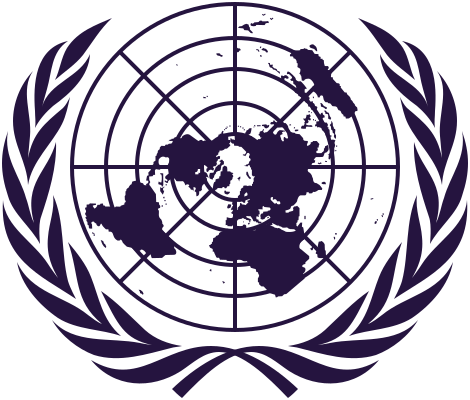

Fifteen rooms, four tiers.
From a first Junior room built for new delegates to full crisis tempo in the tribunals and response committees. Some rooms straddle two tiers — filter by either.
Preventing the Exploitation of Children Through Forced Labour and Recruitment by Armed Groups.
A protection-focused committee built for first-time delegates, with guided caucusing around one of MUN's most human agenda items.

Addressing the Humanitarian Consequences of Online Radicalisation, Disinformation, and Digital Harm.
The Assembly's social and humanitarian committee, taking on a distinctly modern harm. Broad speakers' list, gentle pace.
Addressing State Engagement and Cooperation with Transnational Criminal Organizations.
Real cartels and complicit states, moderated at a pace that suits delegates moving up from their first conference.
Strengthening International Legal Frameworks to Prevent the Abuse of Emergency Powers by Governments.
The Assembly's legal committee. Drafting-heavy, but paced for delegates still building confidence with procedure.
Evaluating the Domination of Franchise Culture and Barriers to Authentic and Indie Film Houses.
A specialised industry committee — studios, streamers and indie houses at the table. A lighter subject with real economic stakes.
Confronting the Polarisation Surrounding Feminism and Its Implications for the Global Women's Rights Movement.
Full procedure at pace on one of the most contested social debates on the floor. Sourced position papers expected.
Examining the Role of Psychological Processes in Shaping Perception, Belief Systems, and Human Actions.
A tribunal-format committee examining the mind itself — evidence, testimony and judgment in place of resolutions.
Assessing the Performance of the United Nations Apparatus.
The UN puts itself on trial. Delegates argue institutional reform through formal tribunal procedure, not caucusing.
Scrutinising the Equity Sale of the World Cup to Private Investors and the Integrity of the FIFA Forward Enterprise.
A specialised governance body outside the UN system, auditing football's biggest institution at pace.
Protecting the Rights of Minorities Amidst Rising Nationalism and Identity Politics.
Full procedure, contested working papers, and a rights agenda shaped by rising nationalism worldwide.
Addressing Regional Power Imbalances in the Wake of Parliamentary Delimitation.
A parliamentary simulation of India's lower house, run under parliamentary rather than UN procedure.

Addressing Peace and Security Challenges Arising from Foreign Military Influence and the New Scramble for Africa.
Fifteen seats, the veto in play, and a live security agenda shaped by great-power competition on the continent.
Regulation of Deep Sea Mining and the Protection of Marine Biodiversity Across International Waters.
A technical, evidence-heavy committee at advanced tempo — scientific testimony carries as much weight as diplomacy.
Strengthening Global Stability through Intelligence-Driven Peacekeeping Strategies and Coordinated Crisis Response Mechanisms.
A crisis committee built for the unexpected — rolling updates, intelligence injects and decisions made under pressure.
Amplifying Economic Innovation and Resolving International Market Failures.
Development and economic policy at full tempo, with chairs who push for evidence behind every clause.
Two-day schedule
Running order is fixed; exact times are released with the delegate handbook.
| Time | Day 1 · 2 Oct | Day 2 · 3 Oct |
|---|---|---|
| TBA | Registration & opening ceremony | Committee session III |
| TBA | Committee session I | Crisis break / inter-committee |
| TBA | Lunch | Lunch |
| TBA | Committee session II | Voting procedure |
| TBA | Unmoderated caucus & drafting | Closing ceremony & awards |
| TBA | Day 1 close | Conference close |
Venue & fees
Venue
TBA
GEMS New Millennium School Campus, Dubai.
Committee rooms
TBA
Room allocations published with the handbook.
Delegate fee
AED 200
Includes materials and both lunches.
Past conferences
Drop real photographs from previous editions into these slots.
Years TBA